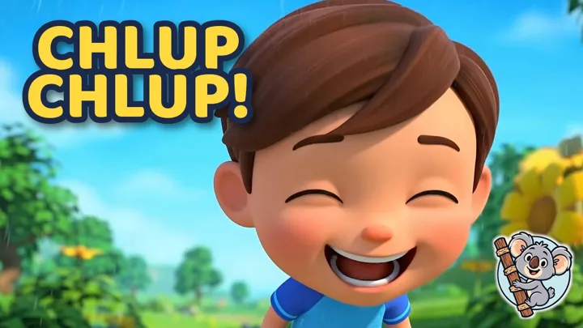
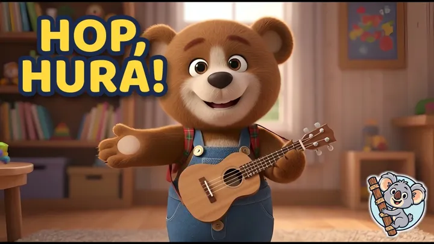
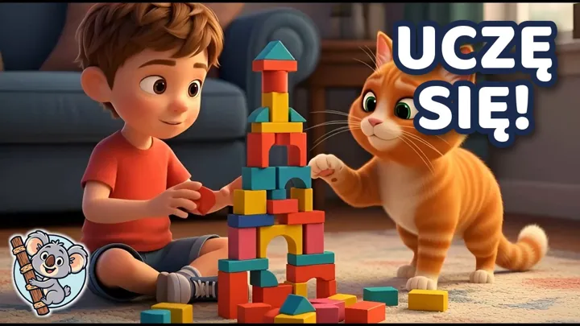
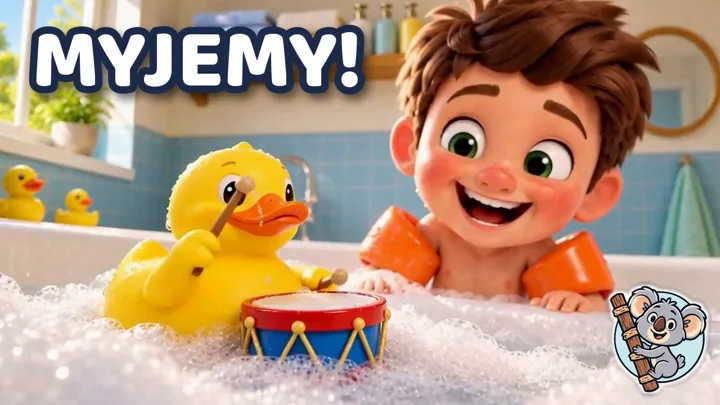
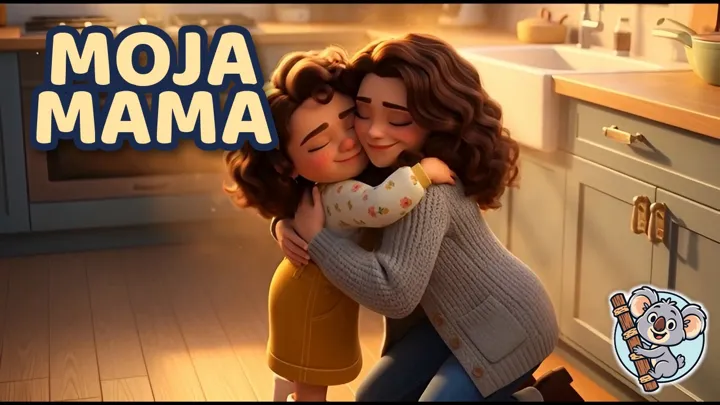
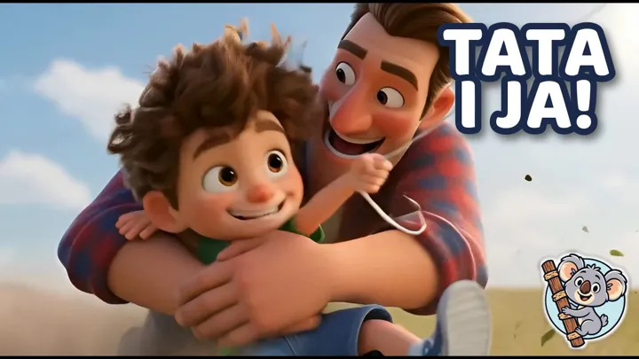

Już na YouTubeMały deszczyk
O deszczu, kałużach i skakaniu w kaloszach.
Mały deszczyk Chlup Chlup Chlup
Oglądaj teledysk →Śpiewamy o deszczu, kąpieli, mamie, tacie i nauce. Wesołe teledyski dla dzieci w wieku 2–8 lat — z tekstem do wspólnego śpiewania.
Nowy teledysk w każdą sobotę o 8:00, a w tygodniu krótkie fragmenty do zabawy.

Już na YouTubeO deszczu, kałużach i skakaniu w kaloszach.
Mały deszczyk Chlup Chlup Chlup
Oglądaj teledysk →
Premiera 25 listopadaMiś z plecakiem w kratkę, taniec i zabawa w chowanego.
Klaśnij raz Tupnij dwa
Premiera na kanale →
Premiera 28 listopadaO ciekawości świata i nauce małymi krokami.
Uczę się co dzień Mały krok Mały krok A taki skok (hej!)
Premiera na kanale →
Premiera 5 grudniaKąpiel od stóp do głów, z kaczuszkową orkiestrą w pianie.
Czy wszystko mamy Do mycia gotowi?
Premiera na kanale →
Premiera 12 grudniaCzuła piosenka o mamie, która zawsze wysłucha.
Moja mama najpiękniejsza Nawet kiedy pada deszcz
Premiera na kanale →
Premiera 19 grudniaMajsterkowanie z tatą: młotek, śrubokręt i wspólna radość.
Tata Tata Ja pomagam
Premiera na kanale →Każdy film jest na YouTube oznaczony jako przeznaczony dla dzieci. Bez przemocy, straszenia, marek i reklam w treści.
Każdy teledysk ma napisy z pełnym tekstem piosenki (włączysz je przyciskiem CC), a tekst jest też w opisie filmu.
Części ciała i kolejność mycia, liczenie, nowe słowa, emocje i codzienne sytuacje z domu i przedszkola.
Muzykę i animacje tworzymy z pomocą narzędzi AI, a teksty i całość przygotowujemy z myślą o dzieciach. Filmy mają na YouTube oznaczenie treści tworzonych z AI.
Pomysł na piosenkę, pytanie albo współpraca — chętnie odpowiemy.